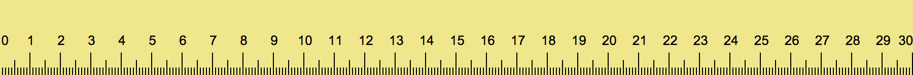
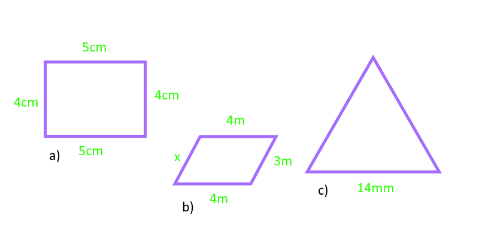

3.1 Benevninger og målinger
Vi bruker meter for å måle lengden av ting, men du har sikkert hørt om centimeter og kilometer. Disse målingene er fortsatt i meter, men det som står foran utrykker tier plassen til tallet. Dette er det vi kaller en benevning.
De mest brukte er:
Milli = 0,001
Centi = 0,01
Desi = 0,1
Deka = 10
Hekto = 100
Kilo = 1000
Vi måler f.eks. avstanden en bil kjører i kilometer, mengde vann i et glass i desiliter og godteri i hektogram. NB: Linjalen din måler i cm.
Øve-Oppgaver:
- Gi eksempler på hvor vi bruker milli, desi og kilo.
Fasit:
Oppgave 1
3.2 Omkrets og areal
Omkrets og areal er to begreper brukt til å beskrive et område på en figur. Omkretsen er lengden rundt hele objekte, mens areale er "lengden" av hele figuren.

Når vi skal finne omkretsen adderer vi alle sidene sammen. Formelen for detter er:
Side 1 + Side 2 + Side 3 + Side 4 = Omkrets til en firkant.
Når vi har et kvadrat kan vi også ta den ene siden og gange med 4, siden alle sidene er like lange.
Areal er litt mer avansert. Da må vi gange lengde og høyde sammen. Og avhengi av figur bruker vi en spesiel formel.
Areal for firkant:
Lengde x høyde
Areal for trekant:
Lengde x høyde
2
Øve-Oppgaver:
Finn omkretsen
Finn arealet

Fasit:
Oppgave 1
Oppgave 2
3.3 Målestokk
Når du skal dra til et sted du ikke kjenner til, hva er det første du gjør? For de fleste er dette å sjekke et kart om rettning. Da viser den et område på flere meter, på en liten skjerm. Dette er akkurat hva målestokk brukes til, vi forminsker store ting til noe mindre, uten å endre form. Man kan også forstørre ting.

Her er det brukt en målestokk på 1:3. Dette betyr at 1cm på tegningen er 3cm i virkeligheten.
Målestokk-forhold kan finnes ved:
Avstanden på bilde
Avstanden i virkeligheten
Skrives som 1:x
Øve-Oppgaver:
Finn høyden av elefanten. Bruk linjal!

På et kart måler du avstanden som 20cm. Du får vite at denne avstanden i vikeligheten er 500m, finn målestokken.